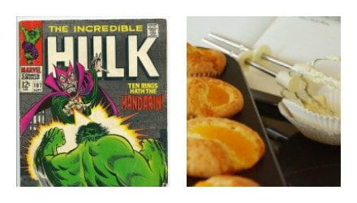
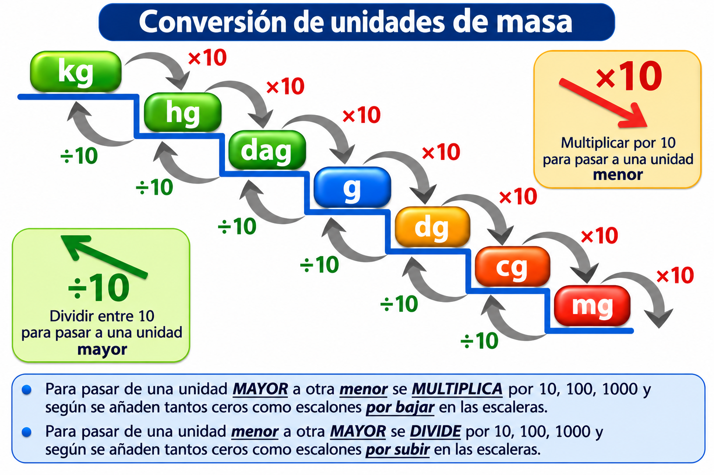
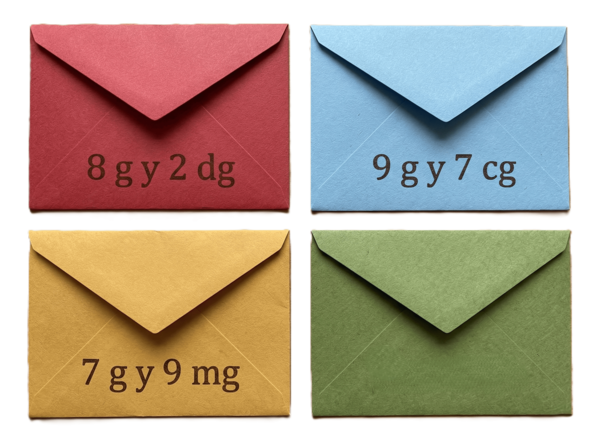
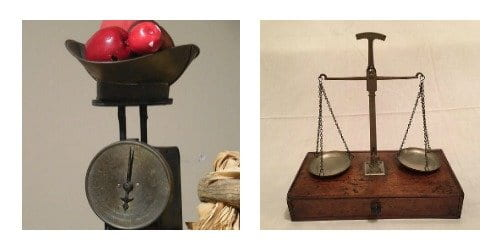
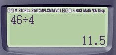
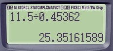
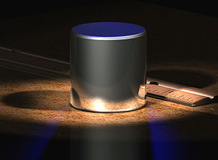

La lluvia de ideas, también denominada tormenta de ideas, es una herramienta de trabajo grupal que facilita el surgimiento de nuevas ideas sobre un tema o problema determinado. Pues bien, empecemos este apartado con una lluvia de ideas sobre qué imagen aparece en nuestra cabeza cuando hablamos de masa. Lo más normal es que nos enfrentemos a una de estas dos situaciones, según tus aficiones, vivencias...
 |
El concepto de masa como magnitud escalar es mucho más común de lo que en principio puedas pensar, ya que habitualmente y de forma poco científica, nosotros nos referimos a ella como peso.
Unidades de masa.
| La masa es la cantidad de materia que tiene un cuerpo. La unidad en el SI es el kilogramo que se representa con el símbolo kg. |
|
Sus múltiplos son: miriagramo (mag), quintal métrico (q) y tonelada métrica (t). Sus submúltiplos son: hectogramo (hg), decagramo (dag), gramo (g), decigramo (dg), centigramo (cg) y miligramo (mg). |
Cambio ente unidades.
Para cambiar de una unidad a otra, se multiplica o divide sucesivamente por 10.

Practica.
Completa
Hemos ido a Correos a enviar estas cartas:

-
¿Cuántos decigramos pesa la carta roja? @@82@@ dg
-
¿Cuántos centigramos pesa la carta azul? @@907@@ cg
-
¿Cuántos miligramos pesa la carta amarilla? @@7009@@ mg
- Sabemos que la carta verde:
- pesa más que la amarilla
- pesa menos que 8 g
- su peso es 6800 mg o 7500 mg o 8100 mg
¿Cuál es el peso de la carta verde? @@7500@@ mg
Otras unidades fuera del Sistema Internacional.
Existen otras medidas de masa que forman parte de nuestra cultura. Algunas de ellas no se usan comúnmente, pero están presentes en expresiones y dichos populares, como por ejemplo: "dame una onza de chocolate", "esto pesa un quintal"...
Instrumentos para medir la masa.
Para medir la masa, tenemos como instrumentos cotidianos la balanza y la báscula, y su funcionamiento se basa en equilibrios y en el concepto físico de peso.

Ejercicio.
La arroba es la cuarta parte del quintal, y equivale aproximadamente a 25 libras. Demuéstralo.
Como nos dicen que la arroba es la cuarta parte del quintal, al dividir los kg que tiene un quintal entre cuatro tendríamos que obtener los kilogramos que tiene una arroba:

Para averiguar a cuántas libras equivale una arroba, tenemos que dividir los kg que supone una arroba entre los kg que supone una libra:

Curiosidad
Curiosidad
El prototipo internacional del kilogramo, un artefacto hecho de platino-iridio, se mantiene en el BIPM bajo las condiciones especificadas por la 1ª CGPM en 1889 cuando se sancionó el prototipo y declaró:
Este prototipo será de aquí en adelante se considerará que la unidad de masa.
La 3ª CGPM (1901), en una declaración destinada a poner fin a la ambigüedad en el uso popular en relación con el uso de la palabra "peso", confirmó que:
El kilogramo es la unidad de masa; es igual a la masa del prototipo internacional del kilogramo.

Para saber más
Masa, peso y cantidad de materia
Como ya hemos visto al principio de este apartado la masa no debe confundirse con el peso, que es una magnitud vectorial que representa una fuerza. Tampoco debe confundirse con la cantidad de sustancia, cuya unidad en el Sistema Internacional de Unidades es el mol.